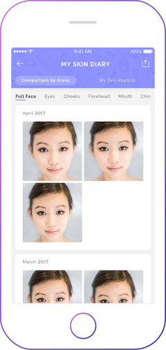

Apakah produk perawatan wajahmu manjur?

Catatan & Analisa Kulit Wajah
TroveSkin mendeteksi permasalahan kulit wajahmu seperti pori-pori, keriput dan pigmentasi, membantumu mengikuti perkembangan kulit wajahmu.
Rekomendasi Produk
Berdasarkan analisa kulit wajahmu, TroveSkin merancang rekomendasi perawatan wajah yang paling tepat untukmu.
Cara menggunakan TroveSkin
3 langkah mudah
Foto selfie
TroveSkin dapat mengatasi pencahayaan yang kurang baik.
Lihat Catatan Wajahmu & dapatkan rekomendasi perawatan wajah personal
Ikuti #TantanganTroveSkin dan dapatkan TrovePoin untuk menikmati diskon produk perawatan wajah yang direkomendasikan untukmu.

Ikuti dan kelola perkembangan kulit wajahmu secara teratur
Bandingkan tahapan perkembangan kulit wajahmu dengan mudah.